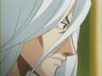
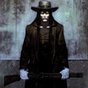

Forums galactiques > Taverne galactique : lieu de discussion informel > [rp] Reception de l'alliance honorable
Pages : 1
| Noritada Réputation à la taverne : 22  08/08 ETU 10:43 | Score : 0 Détails Noritada souriait en organisant les domestiques pour qu'il préparent la navette a la réception qui allait suivre. Tout était prévu, boissons, animations, et a la toute fin, la cérémonie. Il en salivait deja.
Le soir arriva, nombres de marchands et autres personnes invitées arrivaient petit a petit. Noritada observait depuis une petite estrade, agenouillé et souriant. Son habit était magnifique et ample. Les manches étaits tellements longues qu'elles touchait terre. Le sabre de Noritada était passé dans sa large ceinture et était sobre et dépouillé de tout ornement. Quand aux cheveux du jeune comandant, ils étaient attachés en chignon et décorés d'une sorte de ruban bleu nuit. Il ne manquait plus que le comandant Syrus et les autres invités. | ||
| Marder Réputation à la taverne : 14  08/08 ETU 13:53 | Score : 0 Détails Le commandant Marder s'approcha de la taverne, bruiante et brilliant de milles feu alors que les alentoures s'asombrissaient à l'approche de la nuit.
Nombres d'invités se massaient devant l'entré de la taverne, le commandant Marder eut un petit mouvement de recule, "braaa..., quand faut y aller..." se dit le commandant, puis repris ça marche pour se placer dans la file qui avançait lentement vers la lumière et la chaleur du batiment. | ||
| Noritada Réputation à la taverne : 22 08/08 ETU 14:07 | Score : 0 Détails Noritada permit au domestique de lui delivrer son message a l'oreille et il aquiessa. Peu après, le comandant Marder fut entré a l'interieur par une entrée proche. Noritada se précipita a sa rencontre en souriant et les bras ouverts et les amples vetements volant dèrière lui.
" Aaahh, cher ami, entrez donc. J'attends la venue du comandant Syrus. Si nous allions nous asseoir et nous rafraichir en attendant." Il dirigea le comandant Marder vers une table et lui servit un bol remplit d'eau chaude dans lequel avait infusé de simple plantes. Noritada en but dignement dans un bol simillaire et sourit en désignant la table. " Si vous desirez autre chose servez vous!" | ||
| Marder Réputation à la taverne : 14 08/08 ETU 14:23 | Score : 0 Détails Le commandant Marder regarda le bol d'infusion avec crainte, mais se décida et pris une gorgée.
"Je crois que ça suffira pour moi." dit le commandant Marder en souriant."J'espere que la bonne humeure et la bien séance resteront de mise toute la soirée." Le commandant Marder leva son verre et dit: " A votre santée commandant Noritada, je vous félicite d'avance pour cette cérémonie, qui, ma foi, semble bien réussie." Le commandant Marder s'enfonça dans son siege et sirota l'infusion bouillante avec grande précautions. | ||
| Syrus Réputation à la taverne : 315 08/08 ETU 19:57 | Score : 0 Détails Syrus arriva rapidement. Il avait revêtu pour l'occasion la tenue d'apparât Vegasienne. Une redingote couleur or sombre lui enserrait le coup mais en s'évasant sur le poitrail, laissait échapper les plis d'un gilet plus clair. On devinait en dessous une chemise blanche légèrement bouffante. Le tout était surmonté d'une étoffe, rouge sombre, nouée en Lavallière, qui symbolisait sa soumission au peuple Vegasien. Un lien de la même couleur ornait le catogan situé à l'arrière de la perruque blanche poudrée qu'il arborait fièrment. Une simple étoffe était nouée au niveau de sa taille.
Syrus marchait avec élégance, à l'aide d'une canne qu'il plantait au sol et redressait alternativement à chaque pas. A ses côtés venaient un cortège de personnes, habillées selon la même mode. En dernier, deux pages portaient avec cérémonie un simple coussin sur lequel était posée une écharpe bleue brodée d'étoiles, symbole de sa capacité à engager son peuple dans l'Alliance Honorable. Le Commandant traversa les rangs des convives, répondant aux sourires amusés par son accoutrement par quelques paroles aimables. Il fut bientôt arrivé près de ses deux alliés, devant lesquels il s'inclina, effectuant une profonde révérence. "Chers Commandants, je vous prie d'excuser ce retard. Nos habits traditionnels rendent extrèmement complexes l'accomplissement des gestes les plus quotidiens...et les plus nécessaire. Veuillez agréer mes excuses. Je suis fort aise de nous voir réunis ici devant une assemblée si nombreuse." Deux personnes se détachèrent du groupe qui le suivait, emportant avec elles, le coussin sur lequel était posée l'écharpe. Avec une beaucoup de solennité, ils la firent passer autour du corps de Syrus, qui ainsi affublé se tourna vers ses alliés. "Me voici à présent prêt à prêter serment au nom du peuple Vegasien." | ||
| Noritada Réputation à la taverne : 22 09/08 ETU 13:21 | Score : 0 Détails Le jeune Noritada, dont les vetements éxtrements amples contrastait avec ceux du comandant Vegasien, sourit et s'inclina un peu plus bas qu'il n'aura du pour un simple allié. Il se releva et claqua deux fois dans ses mains pour apeler un domestique auquel il chuchota un ordre dèrrière son éventail et revint au comandant Syrus.
" Je suis heureux mon ami que vos intendants vous ait laisser venir." Il avait dit cela sur un ton presque imperceptible de plaisanterie, sans pour autant manquer de respect aux intendants. " Venez donc près de l'estrade. Je vais m'installer et comencer la cérémonie." Juste avant de partir il sourit au comandant Marder et parla a voix basse. " Je vous verrait après la cérémonie mon cher." Puis le jeune comandant et fondateur de l'alliance honorable alla s'installer sur l'estrade lui etant réservée. Il s'assied gracieusement, ses vetements amples se déposants tels des ailes d'oiseau finissant de se coller aux flancs de celui ci. Le silence se fit au bout de quelques minutes. " Tout d'abord, bonsoir a vous tous! Je tiens a honorer la présence de vous tous, vous qui venez rendre hommage a la création de l'alliance. Cette alliance est née de mon désir de voir l'honneur resplendir dans cette galaxie, tel les astres nous entourant. Il n'y a certe pour l'instant qu'une simple étincelle, mais qui va grandissante et commence a prendre. Moi mème je n'éspérait pas un tel départ pour l'Alliance. Nous comptons deja quatres comandants dans nos rangs: Moi mème, la ravissante Nymphe, Le comandant Marder et enfin, le comandant représentant de la confédération Vegasienne, et qui fut le premier a me rejoindre pour alimenter l'étincelle, le digne comandant Syrus. Syrus-sama, Avancez vous devant l'estrade s'ilvousplait!" Le jeune diplomate et comandant se tourna vers la délégation Vegasienne, un sourire aux lèvre et le regard fière. | ||
| Marder Réputation à la taverne : 14 09/08 ETU 13:58 | Score : 0 Détails Impressionné par la tournure de cette cérémonie ainsi que les agissements de ces alliés, le commandant Marder pourta toute son attention vers l'estrade, il aggripa son siege, pour le faire pivoter, et ainsi faire face à ces alliés. Un grincement attroce s'en fit suivre, attirant par la même les regards des invités lui étant proche.
Le commandant Marder se gratta la tete et s'escusa rapidement puis reporta son attention sur la cérémonie, sirotant ça troisième infusion de la soirée. Il ne pu que ramarquer la complexitée des costumes de cérémonie de ces alliés et porta son regard sur son torce et ne pu s'empécher de froter le reste de poussiere qui était resté accrochée à son plastron de cuire souple puis tira ça cape noir qui le couvrait presque completement et posa son regard sur le commandant Syrus et la délégation Vegasienne, tout en gardant le silence il observa. | ||
| Syrus Réputation à la taverne : 315 09/08 ETU 21:32 | Score : 0 Détails Les membres du Congrès Vegasien semblaient surveiller chaque geste du Président de leur Confédération. Leurs regards inquisiteurs avaient pour fonction de lui rappeler qu'il ne tenait ses pouvoirs que de leur seul consentement et qu'ils pouvaient à tout moment le destituer. Pourtant, Syrus s'avança avec calme et élégance, imperturbable. Seule sa main posée sur l'écharpe trahissait l'invisible lutte de pouvoirs. Quelques pas plus tard, il se retrouvait devant l'estrade.
| ||
| Noritada Réputation à la taverne : 22 09/08 ETU 23:56 | Score : 0 Détails Noritada sourit d'une étrange manière, un peu en coin, comme si il riait interieurement des conseillers. Il n'avait jamais connu telle chose et avait toujours vécu sous un empire. Il était maintenant empereur et il savait que ses conseillers n'oserait mème pas croiser son regard.
Il admirait le comandant Syrus qui avait réussi a tenir son pouvoir au millieu de ses rapaces. Le jeune comandant se leva doucement et fièrement. Ses conseillers autours de l'estrade s'inclinèrent sur son passage. La voie claire et agréable de Noritada révélait son passé de diplomate acéré. " Mon ami, comandant Syrus." C'était la première fois qu'il appelait le comandant Syrus ainsi. Il soulignait ainsi qu'il ne faisait aucun cas des intendants de Syrus. C'était une sorte de provocation moqueuse que la plupart de ses hommes ne pourrait relevée par faute d'analyse. Noritada mis son poing dans sa main a hauteur de son visage et s'abaissa devant le comandant Syrus atendant qu'il fasse de mème. | ||
| Syrus Réputation à la taverne : 315 10/08 ETU 00:13 | Score : 0 Détails Syrus ne put s'empecher de sourire aux mots du Commandant Noritada en imaginant l'indignation des représentants du Congrès. Ces vipères le lui feraient certainement payer en rentrant mais ce moment de plaisir en valait largement la peine.
Avec un regard de complicité Syrus effectua le même geste que son allié. | ||
| Noritada Réputation à la taverne : 22 10/08 ETU 10:19 | Score : 0 Détails Noritada se releva en souriant et se tourna vers un homme. Celui-ci ne semblait pas ètre un domestique et était habillé aussi gracieusement que Noritada, mais dans une grace toute millitaire. Il tendit le sabre au jeune comandant. Noritada le remis d'un geste parfait le sabre qui scéllait son entrée dans l'alliance.
" Syrus, soit le bienvenu dans l'alliance!" | ||
| Syrus Réputation à la taverne : 315 12/08 ETU 09:46 | Score : 0 Détails Syrus saisit le sabre avec beaucoup de gravité, tira la lame qu'il tint nue, portée horizontalement sur la paume de ses mains.
"Commandant Noritada, je ne puis qu'être fier de faire partie de vos alliés. Je jure, dès maintenant et jusqu'à ce que vous ou la mort ne me releviez de mon serment, d'agir avec Honnêteté, Courage, Compassion, Courtoisie,Honneur, Sincérité et d'accomplir mon Devoir." | ||
| Noritada Réputation à la taverne : 22 12/08 ETU 10:48 | Score : 0 Détails Noritada sourit, veritablement touché par cette démonstration d'honneur et tira son sabre d'un mouvement élégant et uniforme. D'un geste circulaire il le plaça a la verticale devant lui.
"Par Hikage, mon sabre, je jure que je mourrait dans l'honneur, par les armes en protégeant l'alliance. " Le sabre redescendit doucement du visage de Noritada et celui ci le rengea sans arreter le geste ni casser le ryhtme. Il souriait fièrement et regardait d'égal a égal le comandant Syrus. " Bien que nos coutumes diffèrent, je suis certain que vous réussirez a defendre votre honneur." | ||
| Syrus Réputation à la taverne : 315 13/08 ETU 12:05 | Score : 0 Détails Syrus remit le sabre dans son fourreau, qu'il passa ensuite sous l'étoffe qu'il portait à la taille. Ayant réussi la manoeuvre, il adressa un grand sourire à ses alliés, le Commandant Noritada et le Commandant Marder. Un des pages Vegasien vint lui murmurer quelques mots à l'oreille. L'air soucieux, Syrus prit congés quelques instants, le temps d'écouter un nouveau rapport de combat émis par sa flotte.
| ||
| Noritada Réputation à la taverne : 22 13/08 ETU 19:14 | Score : 0 Détails Noritada sourit et haussa un sourcil quand un homme habillé d'de noir en armure de l'empire vint lui chuchoté un rapport du mème type. Noritada le remercia et chuchota quelque chose a son tour puis soupira.
|
Pages : 1
Forums galactiques > Taverne galactique : lieu de discussion informel > [rp] Reception de l'alliance honorable